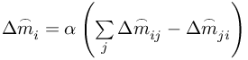
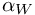
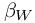
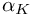
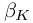

Simulate with complex geometries and complex physics
RepresentativeMass_iData
(chamberwise) parameter for the RepresentativeMass algorithm (UCV)
RepresentativeMass_iData = ( iTrigger, newPoints, inactiveOrDeletedPoints, nbSmootingLoops, correctionFactorPerSmoothingLoop, ...
iMethodSmooth, whichVi, iMethodRepDens, startAtTimeCycle, ...
Wfactor, VWexponent, Kfactor, KWexponent, Mexponent , ...
deletion_weightInflowOutflow, deletion_weightOtherBND , ...
$eqnForFitering$ )
| entry | description |
|---|---|
| iTrigger | global switch for representative mass algorithm |
| off: 0 (default), on: 1, see RepresentativeMassAlgorithm | |
| newPoints | number of loops to provide representative mass packages from existing points to new points |
| Default: 1 | |
| inactiveOrDeletedPoints | for development/debugging, KEEP AT 1 |
| nbSmootingLoops | number of iteration loops per time cycle of the Smoothing algorithm |
| correctionFactorPerSmoothingLoop | multiply the mass change in Smoothing by a reducing factor (in percent!!!) |
|  | |
| iMethodSmooth | method for Smoothing algorithm |
| choose 1, 2, or 3. | |
| Recent true applications show, that most efficient smoothing is achieved with method 3. The other methods might provoke strange behavior. | |
| whichVi | for development/debugging, KEEP AT 1 |
| iMethodRepDens | method how to compute the representative density, see DefinitionRepresentativeDensity |
| startAtTimeCycle | start the representative mass analysis at this time cycle |
| Wfactor | value of , see DefinitionRepresentativeDensity |
| VWexponent | value of , see DefinitionRepresentativeDensity |
| Kfactor | value of , see Smoothing |
| KWexponent | value of , see Smoothing |
| Mexponent | for development/debugging, KEEP AT 1 |
| deletion_weightInflowOutflow | redistribution of repMass of deleted/deactivated points: additional weight factor for inflow and outflow points (in percent!!!) |
| deletion_weightOtherBND | redistribution of repMass of deleted/deactivated points: additional weight factor for other boundary points except inflow and outflow (in percent!!!) |
| $eqnForFitering$ | equation number for the filter that defines, what points are allowed to carry a representative mass. |
| Default: 0, other values have to be implemented in USER_common_variables |
begin_equation{$myFilter$} #if the functional is positive, the point is allowed to carry representative mass
if ( Y%ind_kob%=%BND_slip% ) :: -1 # points on %BND_slip% will not carry RepMass
else :: 1 # all other points regularly carry RepMass
endif
end_equation
RepresentativeMass_iData = ( ..., $myFilter$ ) # put the filter equation at the 17th position
- The algorithm is described in RepresentativeMassAlgorithm.
- Using this volume correction will overwrite any setting for the global volume correction by VOLUME_correction.
| This item is referenced in: | |
|---|---|
| %ind_BNDfree_defect% | defect displacement of free surface with regards to the representative mass, clusterwise |
| %ind_mi_rep% | representative mass of the point |
| RepresentativeMass_iData | (chamberwise) parameter for the RepresentativeMass algorithm (CV) |
| RepresentativeMass_iData | (chamberwise) parameter for the RepresentativeMass algorithm (UCVO) |
| RepresentativeMass_iData | (chamberwise) parameter for the RepresentativeMass algorithm (UCV) |
| VOLUME_correction | (chamberwise) parameter to correct volume by GLOBALLY adjusting the divergence of velocity term (UCV) |
| VOLUME_correction_local | (chamberwise) parameter to correct volume by LOCALLY adjusting the divergence of velocity term due to representative mass balance (UCV) |
| Beta | Release notes for the MESHFREE beta executables |
| VolumeCorrection | Volume Correction Algorithms in MESHFREE |
| RepresentativeMassAlgorithm | How to distribute prepresentative masses to MESHFREE points |
| Smoothing | smooth the representative masses in order to obtain smooth representative density |